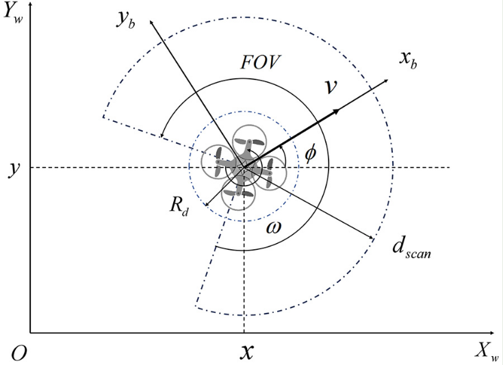
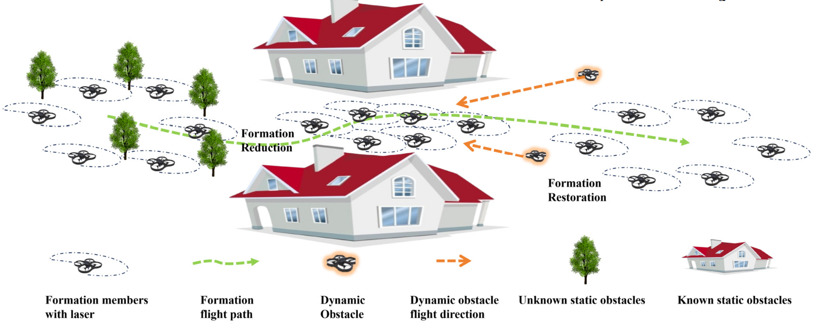
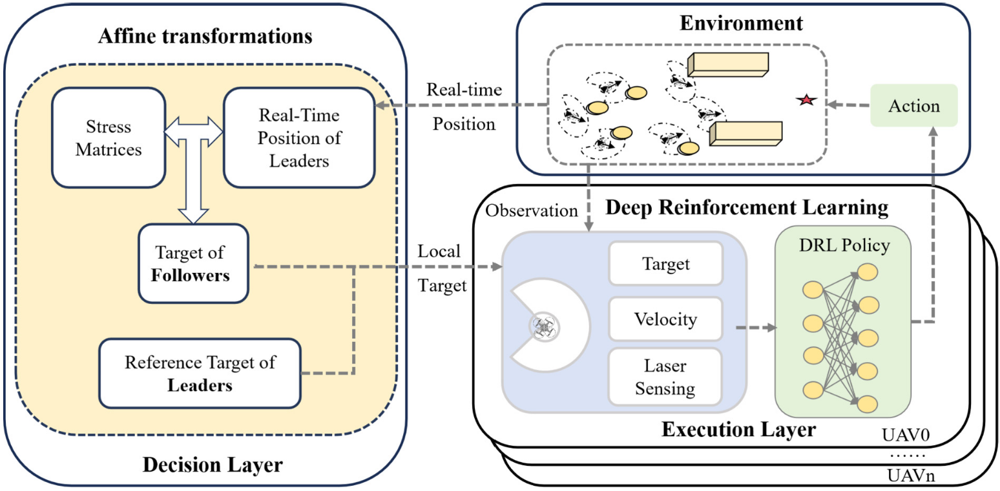

| Title | Flexible multi-UAV formation control via integrating deep reinforcement learning and affine transformations（融合深度强化学习与仿射变换的多无人机灵活编队控制） |
| Authors | Yunhao Liu（第一作者）、Guanzheng Wang、Chao Yan、Xiangke Wang、Zhiping Huang、Zhihong Liu（corresponding） |
| Affiliation | 国防科技大学（National University of Defense Technology）智能科学学院；南京航空航天大学（Nanjing University of Aeronautics and Astronautics）自动化学院 |
| Venue | Aerospace Science and Technology，2025年2月，Vol. 157，109812 |
| DOI / Links | 10.1016/j.ast.2024.109812 | Received: 2024-08-20 | Revised: 2024-11-24 | Accepted: 2024-12-01 | Published: 2024-12-05 |
| TL;DR | 提出一种模型-数据混合驱动的两层编队控制框架：决策层用仿射变换（affine transformations）和应力矩阵（stress matrices）保证编队结构的数学完整性（旋转、缩放、剪切、平移），执行层用 PPO-CNN 深度强化学习端到端输出速度指令实现避障与安全导航。两阶段课程学习加速训练收敛。在 STAGE 模拟器中与纯仿射编队、纯学习方法、ORCA 全面对比——本文方法在无碰撞前提下实现了最优的编队保持能力和运动平滑性，可扩展至 4~10 架 UAV。 |
| Inspiration Source | What Insight It Inspired | Type |
|---|---|---|
| Zhao (2018) 仿射编队控制理论——仿射变换保持共线性和比例关系，提供结构完整性的数学保证 | 编队结构的形状保持可以用仿射变换数学严格描述——不需要学习、不需要调参、数学上可证明。这是模型驱动部分的数学基础 | 数学 |
| 应力矩阵的 Leader-Follower 分块性质（Omega_ff 可逆时 follower 可由 leader 唯一确定） | 每个 follower 只需本地应力矩阵块 + leaders 位置即可独立计算目标——分布式计算的数学保证。这是"分布式算法"的理想形态：数学优雅 + 工程可行 | 架构 |
| PPO 在连续控制任务中的成功（Schulman et al. 2017）+ 课程学习在 RL 训练中的有效性（Bengio et al. 2009） | 避障和安全导航是难以建模的非结构化子问题，适合交给 DRL 数据驱动——且两阶段课程学习（无障碍到复杂障碍）可以大幅降低训练难度 | 方法 |
| Long et al. (2018) 的端到端 LiDAR-to-velocity 碰撞避免策略 | 从传感器数据直接映射到速度指令的端到端范式，将感知-规划-控制统一到一个神经网络中联合优化——消除模块间累积误差 | 策略 |
flowchart TB
subgraph DL["决策层（模型驱动）— 仿射变换 + 应力矩阵"]
direction TB
NOM["标称编队构型 x"] --> AFF["仿射变换 (A,b)
x'(t) = (A(t) ⊗ I_d) x + [1_N ⊗ I_d] b(t)
旋转 · 缩放 · 剪切 · 平移"]
AFF --> STRESS["应力矩阵 Omega 分块
Omega_ll, Omega_lf, Omega_fl, Omega_ff"]
STRESS --> PFSTAR["Follower 目标: p_f*(t) = -Omega_ff^{-1} Omega_fl p_l(t)
纯数学计算 — 无需训练"]
end
subgraph EL["执行层（数据驱动）— 每 UAV 一个 PPO-CNN"]
direction TB
OBS["观测 o_i
LiDAR 270度 x 3帧 (3x512)
+ [v_i, omega_i] + Delta_p_i (极坐标)"]
CNN["Conv1D 特征提取
2层: k5s2 / k3s1 · ReLU · 32ch
+ FC(256) ReLU"]
CONCAT["特征拼接
LiDAR 特征 + 速度 + 相对目标"]
FC["FC(128) + ReLU"]
ACTOR["Actor: 高斯分布
mu_v(sigmoid), sigma_v
mu_omega(tanh), sigma_omega"]
CRITIC["Critic: V(o_i)"]
OBS --> CNN --> CONCAT --> FC
FC --> ACTOR
FC --> CRITIC
end
subgraph UAVM["UAV 运动学 + 环境"]
ACTION["动作: a_i = [v_cmd, omega_cmd]
v in [0, 1.0] m/s
omega in [-1.0, 1.0] rad/s"]
KIN["独轮车运动学
x_dot = v cos(psi)
y_dot = v sin(psi)
psi_dot = omega"]
ENV["STAGE 仿真器
静态 + 动态 + 复杂障碍物"]
ACTION --> KIN --> ENV
end
PFSTAR -->|"p_i*(t) — 目标位置"| OBS
ACTOR --> ACTION
ENV -.->|"奖励: r_target + r_collision + r_smooth1 + r_smooth2"| CRITIC
ENV -.->|"下一状态 o_i' + done 信号"| OBS
CRITIC -.->|"GAE 优势估计 · gamma=0.99 · lambda=0.95"| ACTOR
classDef decision fill:#f0ebfd,stroke:#8b5cf6,stroke-width:2px,color:#6d28d9
classDef execute fill:#e8f0fe,stroke:#3b82f6,stroke-width:2px,color:#1d4ed8
classDef uav fill:#e6f7ee,stroke:#10b981,stroke-width:2px,color:#047857
class NOM,AFF,STRESS,PFSTAR decision
class OBS,CNN,CONCAT,FC,ACTOR,CRITIC execute
class ACTION,KIN,ENV uav
flowchart TB
subgraph INPUTS["每 UAV 输入（每个时间步）"]
direction LR
LIDAR["LiDAR 扫描
270度 FOV · 512条射线
3帧历史堆叠"]
STATE["自身状态
线速度 v_i
角速度 omega_i"]
TARGET["相对目标位置
Delta_p_i（距离、角度）
p_i* 来自决策层"]
end
subgraph NETWORK["策略网络 pi_theta（所有 UAV 共享权重）"]
direction LR
CNN1["Conv1D Layer 1
32通道 · k=5 · s=2 · ReLU"]
CNN2["Conv1D Layer 2
32通道 · k=3 · s=1 · ReLU"]
FC256["FC(256) + ReLU
LiDAR 特征提取完成"]
MERGE["特征融合
Concat(LiDAR特征, v, omega, Delta_p)"]
FC128["FC(128) + ReLU"]
HEAD_A["Actor 头
Linear -> mu_v, log_sigma_v
Linear -> mu_omega, log_sigma_omega"]
HEAD_C["Critic 头
Linear -> V(o_i)"]
end
subgraph OUTPUTS["输出 + 训练信号"]
direction LR
CMD["速度指令
v_cmd in [0, 1.0] m/s
omega_cmd in [-1.0, 1.0] rad/s"]
REW["每步奖励
r_target (+15) + r_collision (-15)
+ r_smooth1 + r_smooth2"]
GAE["GAE 优势估计
gamma=0.99 · lambda=0.95
T_horizon=8000 · K_epoch=20"]
end
INPUTS --> NETWORK
NETWORK --> OUTPUTS
LIDAR --> CNN1 --> CNN2 --> FC256 --> MERGE
STATE --> MERGE
TARGET --> MERGE
MERGE --> FC128
FC128 --> HEAD_A --> CMD
FC128 --> HEAD_C --> GAE
REW --> GAE
GAE -.->|"PPO KL-penalty 更新
lr=5e-5 / 2e-5 · KL_target=15e-4"| FC128
CMD -.->|"驱动 UAV 运动学
独轮车模型"| STATE
classDef input fill:#fef7ed,stroke:#f59e0b,stroke-width:2px,color:#92400e
classDef network fill:#e8f0fe,stroke:#3b82f6,stroke-width:2px,color:#1d4ed8
classDef output fill:#e6f7ee,stroke:#10b981,stroke-width:2px,color:#047857
class LIDAR,STATE,TARGET input
class CNN1,CNN2,FC256,MERGE,FC128,HEAD_A,HEAD_C network
class CMD,REW,GAE output
flowchart TD
subgraph PHASE1["阶段1: Stage 1 训练 — 无障碍环境"]
direction LR
S1_INIT["初始化: PPO 策略 pi_theta
KL-penalty 变体 · lr=5e-5"]
S1_ROLLOUT["采样: N 架 UAV 导航至目标
仅 UAV 间互碰避免
无外部障碍物"]
S1_UPDATE["PPO 更新: GAE + KL-penalty
每 8000 步批数据 20 轮训练"]
S1_CHECK{"奖励 ~90
~70k 迭代？"}
S1_INIT --> S1_ROLLOUT --> S1_UPDATE --> S1_CHECK
S1_CHECK -->|"否"| S1_ROLLOUT
end
subgraph PHASE2["阶段2: Stage 2 训练 — 复杂障碍环境"]
direction LR
S2_INIT["加载 Stage 1 checkpoint
lr=2e-5（精调学习率）"]
S2_ROLLOUT["采样: 静态圆柱 + 动态障碍物
随机初始位置 · 随机目标分配"]
S2_UPDATE["PPO 更新: 同 GAE + KL-penalty
KL_target=15e-4 · 自适应 beta
KL 过大则 beta×2 · 过小则 beta÷2"]
S2_CHECK{"奖励 ~115
收敛？"}
S2_INIT --> S2_ROLLOUT --> S2_UPDATE --> S2_CHECK
S2_CHECK -->|"否"| S2_ROLLOUT
end
subgraph PHASE3["阶段3: 在线推理 — 分布式执行"]
direction LR
I_INIT["加载训练好的策略 pi_theta
设置 deterministic=True（使用均值）"]
I_LOOP["每时间步 per UAV_i:"]
I_OBS["1. LiDAR 扫描 -> 获取观测 o_i"]
I_TGT["2. 决策层: 计算 p_i*(t) via Eq.(8)"]
I_INFER["3. 策略推理: a_i = pi_theta(o_i)"]
I_STEP["4. 执行: v_cmd, omega_cmd -> 运动学步进"]
I_DONE{"5. 所有 UAV 到达
或超最大步数？"}
I_INIT --> I_LOOP
I_LOOP --> I_OBS --> I_TGT --> I_INFER --> I_STEP --> I_DONE
I_DONE -->|"否"| I_LOOP
end
S1_CHECK -->|"是: 保存 checkpoint"| S2_INIT
S2_CHECK -->|"是: 保存最终策略"| I_INIT
I_DONE -->|"是"| EVAL["评估: 位置误差
相似性误差 · Avg Jerk
飞行时间 · 碰撞次数"]
PHASE2 -.->|"反馈: 收敛慢则调整超参"| PHASE1
EVAL -.->|"反馈: 消融实验验证课程设计"| S1_INIT
classDef phase1 fill:#fef7ed,stroke:#f59e0b,stroke-width:2px,color:#92400e
classDef phase2 fill:#e8f0fe,stroke:#3b82f6,stroke-width:2px,color:#1d4ed8
classDef phase3 fill:#e6f7ee,stroke:#10b981,stroke-width:2px,color:#047857
classDef eval fill:#f0ebfd,stroke:#8b5cf6,stroke-width:2px,color:#6d28d9
class S1_INIT,S1_ROLLOUT,S1_UPDATE,S1_CHECK phase1
class S2_INIT,S2_ROLLOUT,S2_UPDATE,S2_CHECK phase2
class I_INIT,I_LOOP,I_OBS,I_TGT,I_INFER,I_STEP,I_DONE phase3
class EVAL eval
| Category | Content | Dimension / Range |
|---|---|---|
| Input | LiDAR 扫描（270度 FOV x 3帧连续扫描，每帧 512 距离值）+ 当前速度 [v_i, omega_i] + 相对目标位置（极坐标：距离 + 角度） | LiDAR: 3x512 距离值；速度: 2维；相对目标: 2维（极坐标） |
| Output | 速度指令 [v_cmd, omega_cmd]：线速度 v 和角速度 omega（UAV 体坐标系） | v in [0, 1.0] m/s, omega in [-1.0, 1.0] rad/s |
| Objective | 每架 UAV 追踪决策层给出的时变目标位置 p_i*(t)，同时避碰并保持编队结构完整性 | 飞行时间最短 + 零碰撞 + 编队误差最小 + 运动平滑 |
多无人机编队在复杂障碍环境（已知静态障碍物 + 未知静态障碍物 + 动态障碍物）中灵活飞行：编队需要整体旋转/缩放/剪切/平移以穿越狭窄通道或躲避动态威胁，同时保持编队结构的数学完整性（共线性、比例关系、应力平衡）。本质上是一个多智能体部分可观测马尔可夫决策过程（Multi-Agent POMDP）：CTDE 范式（集中式训练、分布式执行）——训练时共享经验池和全局 PPO 更新，推理时每架 UAV 完全独立决策。平台：STAGE 2D 模拟器，场景：静态/动态/复杂三种障碍物环境。
表头用英文，正文用中文
| Prior Method | Core Idea | Why It Fails |
|---|---|---|
| Affine Formation Control （Zhao 2018, 纯模型驱动） |
用仿射变换（旋转、缩放、剪切、平移）+ 应力矩阵定义编队的灵活构型约束——编队可以变形但保持共线性和比例关系 | 编队精度最高（位置误差 0.078m，相似性误差 0.00034），但完全不考虑避障——在静态障碍物场景中 50/50 次实验全部碰撞。数学模型没有"障碍物"概念——这是纯模型方法在复杂环境中的致命缺陷。 |
| Learning-based Formation （Bai et al. 2022, 纯数据驱动） |
用 DRL 端到端学习从观测到速度指令的映射，通过 Leader-Follower 相对位置偏移量定义编队约束 | 能避障（0/50 碰撞），但编队结构容易被破坏：静态场景相似性误差 0.047，复杂场景 0.078——均显著高于本文方法的 0.039 和 0.075。原因是相对位置约束过于刚性，在避障时缺乏灵活性。运动平滑性也较差（Avg Jerk 6.374~6.759 vs 本文 6.219~6.402）。 |
| ORCA (Optimal Reciprocal Collision Avoidance) （Van den Berg et al. 2011） |
基于速度障碍（Velocity Obstacle）的互惠避碰算法——每架 UAV 独立计算无碰撞速度 | 仅关心避碰，不关心编队结构。位置误差极大（2.9~3.7m），尤其在复杂场景中编队形状完全丢失（相似性误差 0.07~0.24）。ORCA-Fixed 策略完全不考虑编队约束；ORCA-varying 虽然引入了仿射变换调整目标，但与 ORCA 的可行解计算冲突——目标变化导致计算开销增大（~80ms vs ~9ms）。 |
| Optimization-based Methods （MPC 编队导航, Wen et al. 2024） |
将编队保持和碰撞避免纳入统一优化框架，通过求解带约束的最优控制问题同时处理编队和避障 | 需要将障碍物信息纳入优化框架——在实际应用中获取全局障碍物先验信息非常困难。且经典优化流程通常将整体任务拆分为多个独立优化的模块，各模块间的建模误差会累积（Chen et al. 2023），最终偏离整体编队控制目标。 |
本文的核心算法是一个两层混合驱动框架：决策层（模型驱动：仿射变换 + 应力矩阵）+ 执行层（数据驱动：PPO-CNN 端到端策略）。CTDE 范式：集中式训练（共享经验池 + 全局 PPO 更新），分布式执行（每架 UAV 独立通过 LiDAR 感知 + 策略网络推理）。两阶段课程学习加速训练：Stage 1 无障碍环境学习基本导航（~70k 迭代），Stage 2 复杂障碍环境 fine-tune。PPO 使用 KL-penalty 变体（非 clip 变体），自适应 KL 惩罚系数。
LaTeX rendered by MathJax. 显示公式用 $$...$$，行内公式用 $...$。符号解释用中文。
| Parameter | Value | Meaning | Selection Rationale |
|---|---|---|---|
| LiDAR FOV / Frames | 270 deg / 3 frames | 扫描角度范围 / 连续历史帧数 | 270度覆盖前方+两侧，保留90度后方盲区（依赖邻居间接感知）；3帧提供时序信息（感知动态障碍物的运动趋势） |
| LiDAR Rays / Max Range | 512 rays/frame / 5 m | 每帧扫描线数 / 最大检测距离 | 512点在角度分辨率（~0.53度）和计算量之间平衡；5m覆盖UAV安全制动距离 |
| Policy Network | 2xConv1D(32ch, k5s2/k3s1) + FC(256) + FC(128) + Actor/Critic | CNN分支提取LiDAR空间特征 -> FC(256)压缩 -> 拼接速度/目标 -> FC(128)融合 | 参考 Long et al. (2018) 的端到端碰撞避免网络架构，在 UAV 编队场景中调整为 4 隐藏层结构 |
| PPO gamma / lambda | 0.99 / 0.95 | 折扣因子 / GAE偏差-方差平衡参数 | 99%未来奖励计入当前决策——编队任务需要长视距规划；lambda=0.95是标准设置 |
| lr (Stage1 / Stage2) | 5e-5 / 2e-5 | 两阶段学习率递减 | Stage 2 降低学习率做精细调优，避免灾难性遗忘 |
| KL_target | 15e-4 | 自适应KL惩罚的目标散度 | 防止策略更新过大——多智能体训练比单智能体更不稳定 |
| T_horizon / K_epoch | 8000 / 20 | 每次更新前的收集步数 / 同批数据重复训练次数 | 多UAV场景需足够样本评估策略质量；20 epochs充分利用样本（UAV环境采样成本高） |
| r_safe / r_arrive | 0.5 m / +15 | 安全碰撞半径 / 到达目标奖励 | 考虑UAV尺寸和LiDAR精度；+15 vs -15形成对称二分信号 |
理解本文需要掌握三个关键基础原理：仿射变换（为什么能灵活变形而不散）、应力矩阵（如何实现分布式Leader-Follower框架）、PPO策略优化（如何在高维连续动作空间中稳定训练多智能体）。
仿射变换在编队控制中的核心价值在于它的"灵活但不散"特性。以 5 架 UAV 的 V 字形编队为例：标称构型定义了 V 字的角度和臂长比例，仿射变换允许领导者将 V 字（a）顺时针旋转 90 度（b）横向压缩穿越狭窄通道（c）纵向拉伸以加快行进速度（d）施加剪切变形以避开障碍物——但无论怎么变，V 字的三点共线性和两臂比例关系始终保持不变。这种"变形金刚"式的编队灵活性是非仿射方法（如固定 Leader-Follower 偏移）无法实现的。
变换类型：旋转（rotation）、各向异性缩放（anisotropic scaling，x/y方向独立缩放）、剪切（shear）、平移（translation）——总计 6 自由度（2D 场景）。
不变性保证：共线性（collinearity）和比例距离（ratio of distances）——这是"形状保持"的严格数学定义。
为什么需要各向异性缩放？：穿越狭窄水平通道时，编队需要在 y 方向压缩而不改变 x 方向的间距——各向同性缩放（uniform scaling）无法做到这一点。
变换类型：仅旋转 + 各向同性缩放（uniform scaling）+ 平移——总计 4 自由度。
不变性保证：角度（angles）和比例距离——比仿射变换更强的约束，但灵活性更差。
为什么不够？：各向同性缩放在 x 和 y 方向等比例变化——编队无法根据环境各向异性调整形状（如狭窄水平通道只需要 y 方向压缩），导致不必要的绕行。
为什么 Leader-Follower 分块是分布式计算的关键？
Actor-Critic 架构的原理分工：Actor（策略网络）输出动作分布 $a \sim \pi_\theta(\cdot \mid o)$——负责"做决策"；Critic（价值网络）输出 $V(o)$——负责"评价决策的好坏"。GAE（Generalized Advantage Estimation）用 Critic 的 TD 误差计算优势函数 $\hat{A}(o, a) = Q(o, a) - V(o)$，指导 Actor 的更新方向。这种"分工+合作"的架构使得训练比纯策略梯度方法（REINFORCE）高效得多。
课程学习为什么至关重要？：多 UAV 编队在复杂障碍物场景中的奖励信号极其稀疏——在到达目标之前，UAV 可能长时间接收不到有意义的正反馈信号，策略在此阶段容易陷入随机游走。课程学习将训练分为（1）无障碍环境学习基本导航和互碰避免——奖励信号密集（每步都能接近目标），策略快速收敛 ~70k 步；（2）用 Stage 1 的"基本功"初始化，在复杂环境中 fine-tune——"已经会走路了，现在只需要学避障"。Without_CL 实验证明了直接从复杂场景训练虽然也能收敛但最终性能显著更差。
论文原图截图。图片保存至 figures/ 子目录。命名 fig1.png ~ fig3.png 即可自动显示。

请将截图保存为figures/fig1.png本图展示了：(Fig. 1) UAV 的 2D LiDAR 感知模型——每架 UAV 配备 270 度视场角的激光扫描仪，提供 512 个距离值/帧，最大检测范围 5m。世界坐标系 (X_w, Y_w) 与机体坐标系 (X_b, Y_b) 的关系由航向角 psi 定义。(Fig. 2) 多 UAV 编队在复杂障碍环境中的任务示意图——已知障碍物（灰色棱柱，需通过编队缩放穿过的狭窄通道）和未知障碍物（黑色圆柱，随机静态 + 动态移动障碍物）混合存在。编队需要实时感知环境并灵活变换构型以安全通过。

请将截图保存为figures/fig2.png本图展示了：(Fig. 3) 整个两层混合驱动框架的架构总览。左侧决策层（Decision Layer）——标称编队 -> 仿射变换(A,b) -> 应力矩阵分块 -> 每架 UAV 的目标位置 p_i*(t)；右侧执行层（Execution Layer）——观测 = LiDAR + 速度 + 相对目标 -> 神经网络策略 -> 速度指令 -> 独轮车运动学。两层通过 p_i*(t) 连接：决策层的输出作为执行层的输入。(Fig. 6) 策略网络的详细结构——2 层 Conv1D（32 通道, k5s2/k3s1, ReLU）处理 3 帧 LiDAR 数据 -> FC(256)+ReLU -> 与速度 + 目标位置拼接 -> FC(128)+ReLU -> Actor 头（均值 + log标准差，v 用 sigmoid, omega 用 tanh，4维）和 Critic 头（V(o), 1维）。

请将截图保存为figures/fig3.png本图展示了：实验结果的核心发现。(Fig. 7) STAGE 训练环境——多 UAV + 随机生成圆柱障碍物（灰色），每轮随机初始化起止位置。(Fig. 8) 两阶段课程学习奖励曲线——Stage 1（无障碍）~70k 迭代收敛至 ~90，Stage 2（复杂障碍）用 Stage 1 checkpoint 初始化，快速收敛至 ~115；Without_CL 曲线（直接从复杂场景训练）虽然也收敛但最终奖励显著更低。(Fig. 10-13) 不同方法在静态/动态/复杂三种场景中的飞行轨迹——本文方法（Ours）保持编队最紧凑、路径最平滑；纯仿射编队（A-F）直接碰撞障碍物；纯学习方法（L-b）在避障时编队结构被拉散；ORCA 编队形状完全丢失。(Fig. 14-16) 可扩展性验证——5/6/10/15 架 UAV 编队的飞行轨迹，编队位置误差随规模增大而成比例增加（正常：累积误差），但平均位置误差和相似性误差保持稳定——证明方法的可扩展性。
| 数据问题 | 潜在困难 | 严重程度 |
|---|---|---|
| Leader UAV 故障 / 丢失（单点故障） | 若 leader 掉线，所有 follower 的 p_f*(t) 计算失效（Eq.(8) 依赖 p_l(t) 输入）——整个编队瞬时崩溃。这是 Leader-Follower 架构的致命弱点，在对抗环境或通信受限场景中尤为严重 | 致命 |
| LiDAR 噪声大 / 部分遮挡 | CNN 特征提取退化，障碍物漏检或误检——策略可能做出危险决策（看不见的障碍物导致碰撞）。270度 FOV 存在 90 度后方盲区，后方高速来障时完全无法感知 | 严重 |
| 分布偏移（训练 vs 测试环境差异大） | 障碍物形状/密度与训练集不同时，DRL 策略泛化能力不足——需要重新训练或 fine-tune。论文只在规则圆柱体障碍物场景中测试 | 严重 |
| 动态障碍物速度过快 / 行为复杂 | DRL 策略的反应时间受限于传感器频率和推理延迟——高速动态障碍物可能来不及规避。训练中只用了 UAV 间互碰作为动态障碍物信号，未专门设计复杂动态障碍物行为 | 中等 |
| 通信延迟 / 丢包 | 当前假设 leader 位置实时可用——若通信链路不稳定，followers 收到的 p_l 是过时的，在高速飞行中可能导致编队偏离预定形状甚至内部碰撞 | 中等 |
| 参考文献 | 为什么重要 |
|---|---|
| Zhao (2018) — Affine Formation Maneuver Control of Multiagent Systems. IEEE Trans. Autom. Control 63, 4140-4155 | 仿射编队控制的理论基础——定义了仿射变换在编队中的数学框架（包括应力矩阵、Leader-Follower 分块、仿射可定位性条件）。本文决策层的数学源头。必读。 |
| Long et al. (2018) — Towards Optimally Decentralized Multi-Robot Collision Avoidance via Deep Reinforcement Learning. ICRA | 端到端 LiDAR-to-velocity 碰撞避免策略的开创性工作——本文的网络结构和观测空间设计直接参考了此文。理解 PPO-CNN 在机器人避障中的设计范式。 |
| Schulman et al. (2017) — Proximal Policy Optimization Algorithms | PPO 原始论文——本文使用的 KL-penalty 变体和 clip 变体均出自此。理解两种变体的区别和适用场景（为什么本文选 KL-penalty 而非 clip）。 |
| Bai et al. (2022) — Learning-Based Multi-Robot Formation Control with Obstacle Avoidance. IEEE Trans. Intell. Transp. Syst. 23, 11811-11822 | 本文的关键 baseline——纯学习方法的编队控制。理解纯学习方法的局限（刚性相对位置约束导致编队灵活性不足），才能理解混合驱动的优势。 |
| Quan et al. (2023) — Robust and Efficient Trajectory Planning for Formation Flight in Dense Environments. IEEE Trans. Robot. 39, 4785-4804 | 编队相似性误差（Laplacian-based）的提出者——本文直接采用了该指标作为评估标准。理解该指标的尺度不变性证明（对旋转/平移/缩放不变），以及为什么它是评估"编队拓扑结构"的最纯粹指标。 |